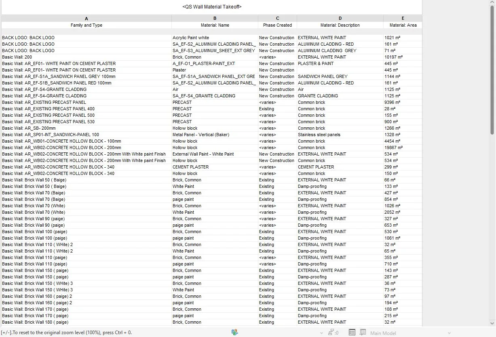
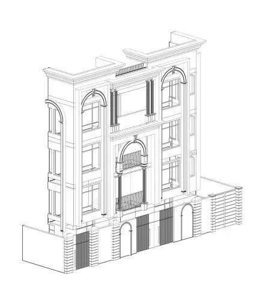

01 — Project Overview
A high-end villa complex, redesigned and documented.
Meydan Villa is a 5,000 m² high-end private villa complex. The scope covered the architectural redesign and full BIM documentation, delivered as LOD 350 models with bespoke interior finish schedules and construction-ready shop drawings.
02 — The Challenge
Redesign without losing construction readiness.
An architectural redesign at this scale had to be reconciled with an existing project direction while still producing LOD 350 documentation and bespoke interior finish schedules — keeping design intent, technical accuracy and procurement data moving together.
03 — Design Approach
Redesign carried straight into the model.
The redesign was developed directly in Revit at LOD 350, so interior finish schedules and shop drawings could be produced from the same model rather than reconciled afterward.
04 — BIM Workflow
05 — Visual Development
Representative BIM output from the same workflow.
Specific renders for Meydan Villa are not included in the current portfolio material. The plates below are representative visuals — villa exterior character, model detail and finish scheduling — from the same LOD 350 workflow used on this engagement.



06 — Technical Delivery
LOD 350, finish-scheduled, construction-ready.
- LOD 350 architectural model
- Bespoke interior finish schedules
- Construction-ready shop drawings
07 — Outcome
Redesign delivered as buildable documentation.
The architectural redesign and full BIM documentation were delivered together — LOD 350 models, bespoke interior finish schedules and construction-ready shop drawings.